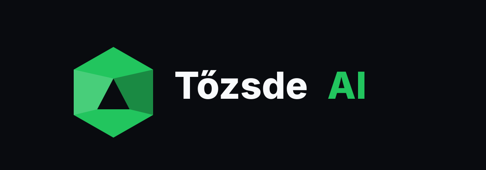
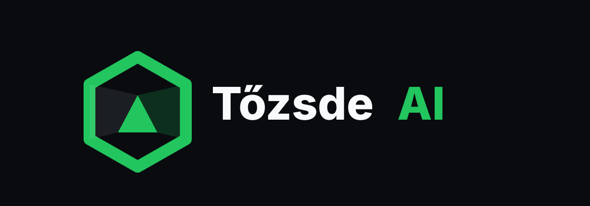
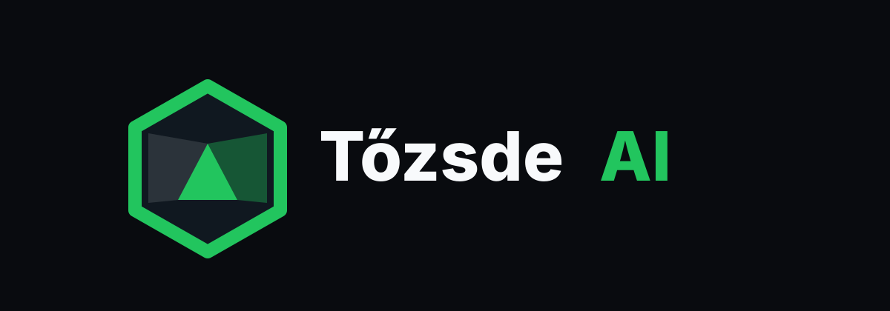
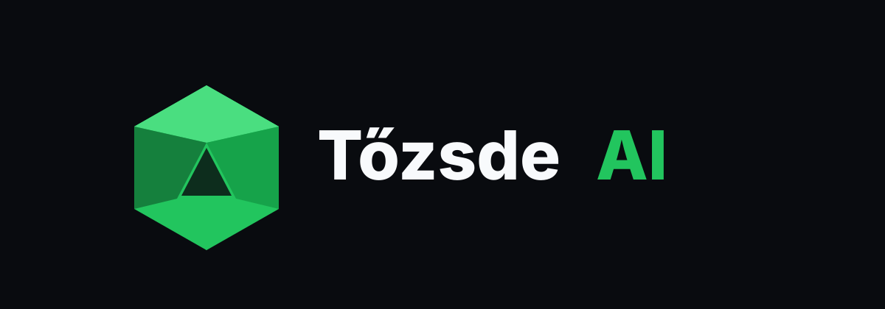
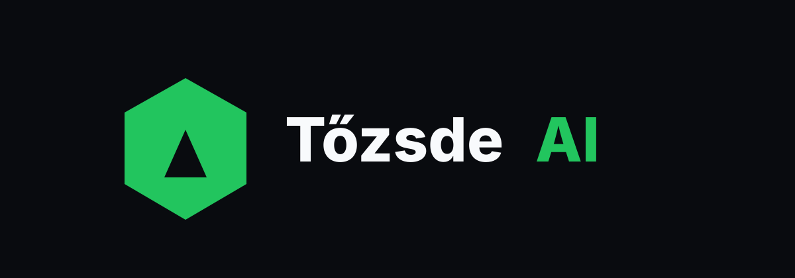

Pajzsvariációk a Tőzsde AI sötét logóhoz.
Mindegyik a harmadik irányból indul ki. A fókusz: zöld pajzs, profibb mark, kevesebb apró részlet, fehér Tőzsde és zöld AI.




Mindegyik a harmadik irányból indul ki. A fókusz: zöld pajzs, profibb mark, kevesebb apró részlet, fehér Tőzsde és zöld AI.




